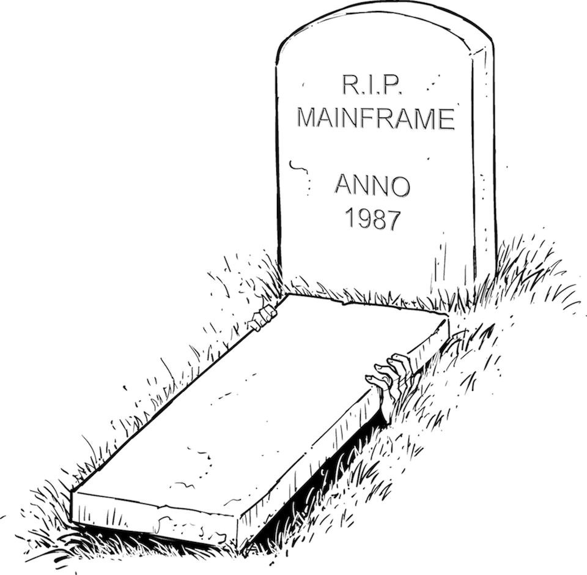

And They Will Eat Your Brain

Corporate IT lives among zombies: old systems that are half alive and have everyone in fear of going anywhere near them. They are also tough to kill completely. Worse yet, they eat IT staff’s brains. It’s like Shaun of the Dead minus the funny parts.
Despite being a reality in corporate IT, living legacy systems are becoming more difficult to justify in a world that’s changing faster and faster. It’s time to put some zombies to rest.
Legacy systems are built on outdated technology and are often poorly documented but (ostensibly) still perform important business functions. In many cases, the exact scope of the function they perform is not completely known. Ironically, most legacy systems generate a lot of revenue because otherwise they would have been killed a long time ago.
When discussing what sets modern “digital” companies apart from traditional ones, “lack of legacy” regularly comes up as a key factor.
Systems fall into the state of legacy because technology moves faster than the business: life insurance systems often must maintain data and functionality for decades, rendering much of the technology used to build the system obsolete. With a bit of luck, the systems don’t have to be updated anymore, so IT might be inclined to “simply let it run,” following the popular advice to “never touch a running system.” Unfortunately, changing regulations or security vulnerabilities in old versions of the application or the underlying software stack are likely to interfere with such an approach.
Traditional IT sometimes justifies their zombies with having to support the business: how can you shut down a system that may be needed by the business? They also feel that digital companies don’t have such problems because they are too young to have accumulated legacy. 150 Google developers attending Mike Feathers’s talk about Working Effectively with Legacy Code1 might make us question this assumption. Because Google’s systems evolve rapidly, they also accumulate legacy more quickly than traditional IT. So it’s not that they have been blessed with not having legacy, they must have found a better way of dealing with it.
Systems become legacy zombies by not evolving with the technology. This happens in classic IT largely because change is seen as a risk (Chapter 26). Once again: “never touch a running system.” System releases are based on extensive, often manual test cycles that can last months, making updates or changes a costly endeavor. Worse yet, there’s no “business case” for updating the system technology. This widespread logic is about as sound as considering changing the oil in your car a waste of money—after all, the car still runs if you don’t. And it even makes your quarterly profit statement look a little better; that is, until the engine seizes.
Slogans like “Never touch a running system” reflect the belief that change bears risk.
A team from Credit Suisse described how to counterbalance this trap in its aptly titled book Managed Evolution.2 The key driver for managed evolution is to maintain agility in a system. A system that no one wants to touch has no agility at all: it can’t be changed. In a very static business and technology environment, this might not be all that terrible, but that’s not the environment we live in anymore!
In today’s environment, the inability to change a system becomes a major liability for IT and the business.
Most things are the way they are for a reason. This is also true for the fear of change in corporate IT. These organizations typically lack the tools, processes, and skills to closely observe production metrics and to rapidly deploy fixes in case something goes awry. They hence try to test for all scenarios before deploying and then running the application more or less “blind,” hoping that nothing breaks. This behavior looks to maximize MTBF—the mean time between failures.
While increasing the time between failures is a worthwhile approach, focusing on MTBF alone has two major downsides. First, it slows down hardware provisioning and software deployment due to excessive up-front testing. It also leads to a situation where the response to an actual failure becomes “this wasn’t supposed to happen.” It’s unlikely that those are the words you want to hear from an operations team.
Such teams often ignore the other side of the equation: the mean time to recovery (MTTR). This metric indicates how quickly a system can recover from an error. Modern teams look at both aspects. As an analogy, you’d want to use fire-retardant materials but also a fire brigade that can be onsite in a few minutes. The top benchmark for incident response time I observed was at a large chemical factory where the fire brigade would be at the incident site in 45 seconds (!). Airports generally achieve two to three minutes.3
Traditional organizations “hope for the best” by relying on ways to maximize MTBF, whereas modern organizations also “prepare for the worst” by minimizing MTTR.
Reducing MTTR involves very different mechanisms such as high system transparency, version control, and automation. In fact, reducing MTTR is such a game changer for IT organizations that it’s one of the four software delivery performance measures used by the authors of the book Accelerate.4
The zombie problem is not limited to systems written in PL/1 running on an IBM/360, though. Often updating basic runtime infrastructures like application servers, JDK versions, browsers, or operating systems scare the living daylights out of IT, causing version updates to be deferred until the vendor ceases support. The natural reaction then is to pay the vendor for extended support to avoid the horror scenario of having to migrate your software to a new version.
Often the inability to migrate cascades across multiple layers of the software stack: one cannot upgrade to a newer JDK because it doesn’t run on the current application server version, which can’t be updated because it requires a new version of the operating system, which deprecates some library or feature the software depends on.
I have seen IT shops that are stuck on Internet Explorer 6 because their software utilizes a proprietary feature not present in later versions.
Looking at the user interfaces of most corporate applications, you would find it difficult to imagine that they eked out every little bit of browser capability. They surely would have been better off not depending on such a peculiar feature and instead being able to benefit from browser evolution. Such a line of thought requires a conscious trade-off between optimizing for the short term versus assuring long-term velocity (Chapter 3).
Ironically, IT’s widespread fear of code (Chapter 11) leads it down a dark and narrow road toward heavily customized frameworks. Version upgrades become very difficult and expensive to make, and another zombie grows. Anyone who has done an SAP upgrade can relate.
The fear of change is even encoded in many IT organizations that separate “run” (operating) from “change” (development), establishing that running software doesn’t imply change. Rather, it’s the opposite of change, which is done by application development—those guys who produce the flaky code IT is afraid of. Structuring IT teams this way will guarantee that systems will age and become legacy because no change could be applied to them.
You might think that by not changing running systems, IT can keep the operational cost low. Ironically, the opposite is true: many IT departments spend more than half of their IT budget on “run” and “maintenance,” leaving only a fraction of the budget for “change” that can support the evolving demands of the business. That’s because running and supporting legacy applications is expensive: operational processes are often manual; the software may not be stable, necessitating constant attention; the software may not scale well, requiring the procurement of expensive hardware; lack of documentation means time-consuming trial-and-error troubleshooting in case of problems. These are reasons why legacy systems tie up valuable IT resources and skills, effectively devouring the brains of IT that could be applied to more useful tasks; for example, delivering features to the business.
When selecting a product or conducting a request for proposal (RFP), classic IT tends to compile a list containing dozens or hundreds of features or capabilities that a candidate product has to offer. Often, these lists are created by external consultants unaware of the business need or the company’s IT strategy. However, they can produce very long lists, and longer appears to be better to some IT staff, whose main motivation lies in demonstrating that the selection was “thorough.”
To cite another car analogy, this is a bit like evaluating a car by having an endless list of more or less (ir)relevant features like “must have a 12V lighter outlet,” “speedometer goes above 200 km/h,” “can turn the front wheels,” and then scoring a BMW versus a Mercedes for these. How likely this is to steer (pun intended) you toward the car you will enjoy the most is questionable at best.
One item routinely missing from such “features” lists is planned obsolescence: how easy is it to replace the system? Can the data be exported in a well-defined format? Can business logic be extracted and reused in a replacement system to avoid vendor lock-in? During the new product selection honeymoon, this can feel like discussing a prenup5 before the wedding—who likes to think about parting ways when you are about to embark on a lifelong journey? In the case of an IT system, you better hope the journey isn’t lifelong; systems are meant to come and go. So better to have a prenup in place than being held hostage by the system (or vendor) you are trying to part with.
How do you break out of the “change is bad” cycle? As mentioned earlier, without proper instrumentation and automation, making changes is not only scary but indeed risky. The reluctance to upgrade or migrate software is similar to the reluctance to build and test software often. Martin Fowler issued the best advice to break this cycle: “If it hurts, do it more often.” Behind the provocative name sits the insight that deferring a painful task generally makes it disproportionately more painful: if you haven’t built your source code in months, it’s guaranteed not to go smoothly. Likewise, if the application server your software is running on is three versions behind, you’ll have the migration from hell.
Performing such tasks more frequently provides a forcing function to automate some of the processes; for example, with automated builds or test suites. Dealing with migration problems will also become routine. This is the reason emergency workers train regularly; otherwise, they’ll freak out in case of an actual emergency and won’t be effective. Of course, training takes time and energy. But what’s the alternative?
Digital companies also have to deal with change and obsolescence.
The going joke at Google was that every API had two versions: the obsolete one and the not-yet-quite-ready one. Actually, it wasn’t a joke, but pretty close to reality.
Dealing with constant change is painful at times—every piece of code you write could break at any time because of changes in its dependencies. But living this culture of change allows Google to keep up the pace (Chapter 35), which is the most important of today’s IT capabilities. Sadly, it’s rarely listed as a performance indicator for project teams. Even Shaun knows that zombies can’t run fast.
1 Michael Feathers, Working Effectively with Legacy Code (Upper Saddle River, NJ: Prentice Hall, 2004).
2 Stephan Murer and Bruno Bonati, Managed Evolution: A Strategy for Very Large Information Systems (Berlin: Springer, 2011).
3 Wikipedia, “Airport crash tender,” https://oreil.ly/e4DNF.
4 Nicole Forsgren, Jez Humble, and Gene Kim, Accelerate: The Science of Lean Software and DevOps: Building and Scaling High Performing Technology Organizations (Portland, OR: IT Revolution, 2018).
5 A prenuptial agreement often clarifies asset division in case of a divorce.